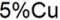

Letztes Update: 31.03.2023
Variablen mit Substitutionsnotationen wie $, % werden im LabTalk-Skript oder in der Legende in ihrem eigentlichen Wert aufgelöst.
Wenn das Skript ausgeführt wird, wirft die Variablensubstitution Probleme auf, falls Sie das Skript mehr als ein Mal ausführen müssen. Um diese Situation zu vermeiden, können Sie die spezielle Substitutionsnotation zu einem Zeichenkettenverzeichnis (string register) zuweisen, anstatt sie direkt zu verwenden.
Beispiel:
Das folgende Skript schreibt die Formel in den Dialog Werte setzen der Spalte Col (B) als Col(A)[i] - %(Col(B)[U]$), ohne dass %(Col(B)[U]$) durch den Wert Einheiten von Col(B) ersetzt wird.
%A="%"; csetvalue f:="Col(A)[i] -�%A(Col(B)[U]$)" c:=Col(B);
Substitutionsnotation in Legenden rendert den eigentlichen Wert. Das Zeichen \ oder % kann in der Legende beispielsweise unerwartete Zeichenketten rendern. Um diese Situation zu vermeiden, können Sie Escape -Sequenzen \v() verwenden.
Beispiel:
| Beispiel | Eingabe ... | Ergebnisse in Legende ... |
|---|---|---|
| 5%Cu | 5\v(%)Cu |  |
Schlüsselwörter:Substitution, Substitution vermeiden, Substitution ausschalten